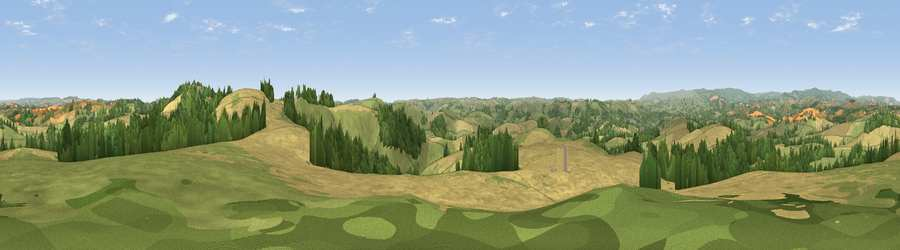

Viewpoint near Berry Pomeroy
#7159 in England · top 17% of its area beats it · near Berry PomeroyWhere it is
The exact computed spot (SX 84025 61650). Click the marker for map links.
The view, rendered

A 360° render of this exact spot computed from the terrain model, tree cover and land cover — summer colours, afternoon light, calibrated against photographs of famous viewpoints. Real trees, hedges and buildings will differ in detail.
The panorama
Grey silhouette: terrain skyline in each direction (720 bearings, Earth curvature and refraction included). Dashed green: skyline with trees (+15 m) and buildings (+8 m) as obstacles. Blue strip: how far the ground is visible on each bearing.
Where the view opens
Wedge length = distance to the farthest visible ground on that bearing (vegetation-aware). Rings at 10, 25 and 50 km.
What fills the view
45% cropland · 37% grassland · 17% woodland ·
Angular shares of the visible panorama (visual magnitude), not map area. Landscape diversity 0.46 (0–1 Shannon).
Key numbers
More beautiful places nearby
The staircase of upgrades: each row has a higher view potential than everything closer. Driving times are estimates from straight-line distance, calibrated against real road routing — check an actual route before setting out.
| Place | Direction | Drive | Score |
|---|---|---|---|
| Viewpoint near Berry Pomeroy | E · 1 km | ~2 min | 76.6 |
| Beacon Hill | ENE · 2 km | ~5 min | 82.3 |
| Viewpoint near Stokeinteignhead | NE · 12 km | ~22 min | 84.1 |
| Viewpoint near East Prawle | SSW · 26 km | ~43 min | 84.6 |
| High Peak | NE · 36 km | ~54 min | 85.3 |
| Golden Cap | ENE · 64 km | ~87 min | 88.7 |
| The Knoll | ENE · 74 km | ~98 min | 91.0 |
50.44320, -3.63466 · source: screening · position refined by local search. Computed location — check access rights before visiting.